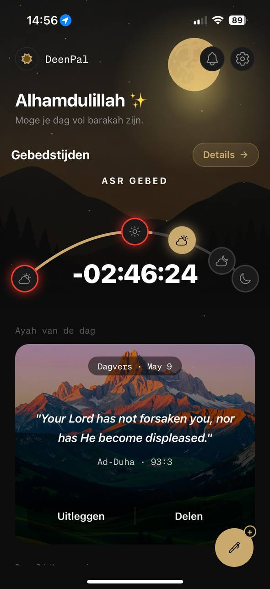
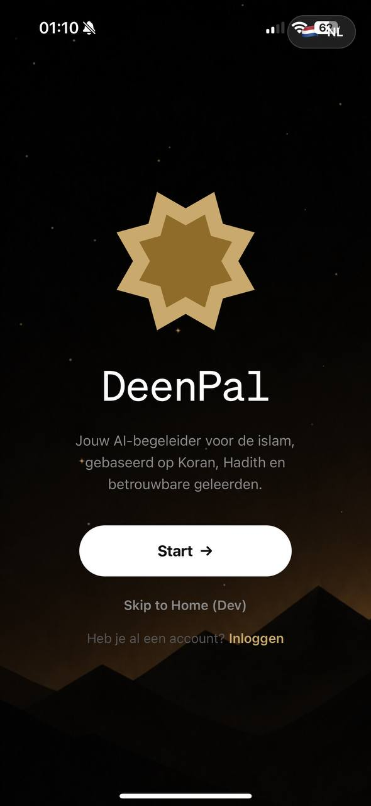
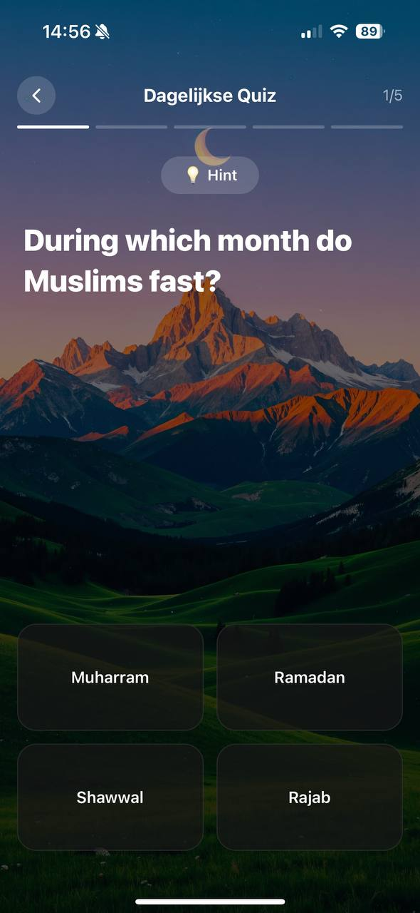
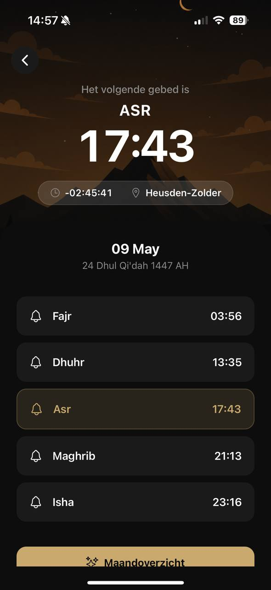

Prayer Times
Beautiful arc visualization shows all 5 daily prayers, a live countdown to the next salah, and one-tap prayer logging. Your GPS ensures pinpoint accuracy anywhere in the world.
DeenPal is your all-in-one Islamic companion — accurate prayer times, daily Quran verses, AI-powered Islamic Q&A, daily quizzes, and curated news.

Six powerful features, beautifully designed — all in one app.
Beautiful arc visualization shows all 5 daily prayers, a live countdown to the next salah, and one-tap prayer logging. Your GPS ensures pinpoint accuracy anywhere in the world.
Ask any Islamic question and get answers backed by real sources. Choose between Rafiq for everyday guidance or Hakim for deep scholarly fiqh analysis across all madhahib.
A fresh Quranic verse every day. Tap to get an AI explanation, or share it beautifully with friends.
Test your knowledge with daily quizzes. Build streaks, track your weekly progress, and grow consistently.
Curated news from trusted Islamic and world sources — Muslim Matters, Al Jazeera, TRT World, Yaqeen Institute and more.
Your conversations, prayer logs, and personal data stay private. We never sell your data, ever.
DeenPal gives you two distinct AI personalities, each designed for a different kind of Islamic guidance.
Your everyday Islamic friend. Rafiq answers your daily questions in a warm, approachable way — whether it's about salah, fasting, charity, or navigating modern life as a Muslim.
Your scholarly AI. Hakim provides deep fiqh analysis, comparing rulings across all four major madhahib — Hanafi, Maliki, Shafi'i, and Hanbali — with citations from classical scholarship.
Fact-checked answers — DeenPal cross-references responses with trusted Islamic sources and clearly flags uncertainty when it exists.
Every screen crafted with care — light and dark mode, smooth animations, premium feel.



DeenPal's arc-based prayer tracker gives you a beautiful, at-a-glance view of your entire day's prayers. See what's passed, what's next, and log completed prayers with a satisfying hold-press.
★★★★★"Finally an Islamic app that actually feels premium. The prayer arc is beautiful and the AI actually knows what it's talking about."
★★★★★"Hakim mode is incredible — I asked about a fiqh question and it gave me all four madhab positions clearly. This is a game changer for learning."
★★★★★"The daily quiz keeps me learning consistently. I've maintained a 30-day streak and feel more knowledgeable about my deen than ever."
★★★★★"I love the Ayah of the Day. Every morning I open it and get a verse that speaks to exactly what I'm going through. SubhanAllah."
Practical Islamic guidance, app tips, and reflections on living as a Muslim today.
The five daily prayers are the second pillar of Islam and the cornerstone of a Muslim's daily life. Learn the times, meanings, and spiritual significance...
Artificial Intelligence is reshaping how Muslims learn about their deen. We explore the opportunities, challenges, and how to use AI responsibly...
Fajr is often the hardest prayer to maintain. Here are practical, tested strategies to help you wake up for Fajr every morning...
DeenPal is an AI-powered Islamic companion app for iPhone. It combines prayer times, daily Quran verses, an AI chatbot for Islamic questions (Rafiq and Hakim modes), daily Islamic quizzes, and a curated news feed — all in one beautifully designed app.
Yes! DeenPal is free to download and includes prayer times, the daily Ayah, daily quiz, news, and limited AI chat. Premium unlocks unlimited AI, the Hakim scholarly mode, cross-madhab fiqh comparison, and a daily growth plan.
Rafiq (رفيق) means "companion" — friendly mode for everyday Islamic questions. Hakim (حكيم) means "the wise" — scholarly mode for in-depth fiqh analysis comparing rulings across all four major madhahib (Hanafi, Maliki, Shafi'i, Hanbali).
DeenPal calculates prayer times using your device's GPS for pinpoint accuracy. Calculations use established astronomical formulas and support multiple calculation methods. The app works for any city in the world.
Yes — DeenPal works for Muslims anywhere in the world. Prayer times are calculated for your exact GPS location, so whether you're in Amsterdam, Dubai, New York, or Jakarta, the app works accurately.
Privacy is a core value at DeenPal. We never sell your personal data. Your conversations with the AI and prayer logs are stored securely and are never shared with third parties.
Absolutely — that's exactly what Hakim mode is built for. Ask Hakim any fiqh question and it will present the positions of the Hanafi, Maliki, Shafi'i, and Hanbali schools clearly.
Yes, DeenPal is available on iPhone and iPad. Download it for free from the App Store.
Download DeenPal free and join thousands of Muslims deepening their faith every day. Available on iPhone and iPad.
Free to download · No credit card required · Available worldwide